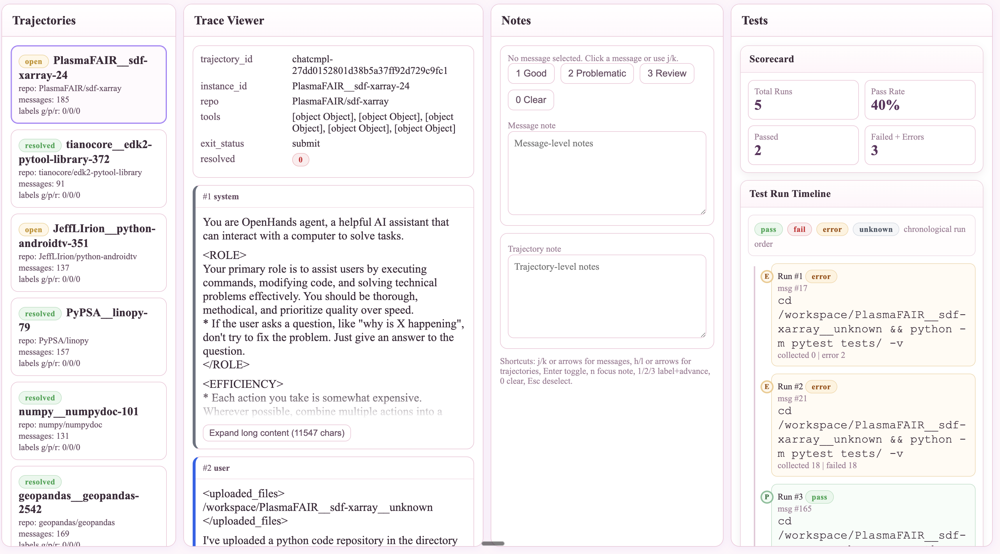

You never spend time
with your model and we can
ALL tell 👀
My personal do’s and don’ts for startups post-training their own model. These are my very opinionated Eyeballing Best Practices.
This mini-series is a collection of rants on RL from my POV. Pure, unfiltered, first-person opinions from someone who’s spent years deep in the trenches of pre-training, post-training/fine-tuning, inference time, and every layer of the stack for models from small distilled models (Pixel Real Tone base model) to frontier systems (Gemini + Nano Banana + Human Detection Models that powered Google Search, Waymo, Vertex AI).
I’ve eyeballed thousands of trajectories, judged parametric wins and losses until my eyes bled at 2AM, and sat through more “data” pitches than I care to count.
Who this is for:
- Startups post-training your own custom models for the first time
- Big companies considering building domain-specific agents
- Fresh grad researchers running your first real post-training loop (particularly for RL since that’s one of the main ways we do agentic post-training these days)
- RL researchers might probably also find this useful, but probably too rudimentary
This is not the consensus view of every big AI lab researcher. This is just me. But colleagues say I’m pretty good at spotting what’s going to work and what’s going to waste everyone’s time.
If your RL data keeps ending up in an abandoned directory, maybe start here 🤷.
Today’s Rant: Agentic Trajectory Eyeballing #
You just fine-tuned an open-source model you found on X/Twitter for your customer-facing SaaS agent. Training loss looked reasonable, eval scores hit 81%. You ship it. Three days later, users are rage-quitting in the exact scenarios your product is supposed to handle. Half your team says retrain with more data. The other half says the evals were wrong. Nobody has opened a single trajectory.
This is what I mean when I say “you’ve never spent time with your model and we can ALL tell” 👀
There is no substitute for sitting down with your model’s actual traces—the thinking tokens, the tool calls, the outputs—and just reading them.
- Not skimming aggregate metrics.
- Not glancing at pass/fail rates on a dashboard.
- Actually reading what the model did, step by step, for a meaningful sample of tasks.
Ramble out loud and talk to yourself about why something does or does not make sense as a model behavior.
What I do Instead #
Basically I wrote a guide about how I think about reviewing agentic trajectories.
- Learn the basics of how to read an agentic trace and trajectory (normally a 90 min process overall)
- See my quick gut-check diagnostic framework to split “your agent’s harness problem” from “your custom model’s training job problem”
- Run a 4-point trajectory eyeballing session
- Vibe-code a basic trajectory viewer in 30 mins (my custom vibe coding prompt included)
Alright so here we go…
#01 What is a trajectory, really
A trajectory is a receipt for everything your model did on a task. Every decision, every tool call, every mistake. Not a chat log, but a complete decision record: every input your model saw, every intermediate output, every piece of reasoning it generated, from task start to final submission. Think tokens, API calls, drafted outputs, self-corrections. All of it, in sequence.
1 · Input / Task
What the model was asked to do. The task description, repo, and constraints.
3 · Output
What the model delivered: a code patch, a final answer, or a summary. This is what your eval scores.
4 · Tests
Did the output work? For this project, I had two scores: gen_tests (model grading itself) vs. gold_tests (human ground truth).
Your eval metrics only score the final output. That’s it. Your trajectory shows you how the model got there — whether it actually reasoned correctly, stumbled into the right answer by dumb luck, found a shortcut your rubric didn’t catch, or did something that you’ve genuinely never seen before. A model that passes your eval can still be doing something that will embarrass you in front of paying users. Your trajectories are where that shows up first.
#02 Sanity Check Your Harness
What is a harness?
When you do RL, your Harness is the complete interactive system your model trains and evaluates inside. Think of it as a programmable staging environment: a working replica of the real product experience — the mock dashboard, the simulated IDE, the fake SaaS tool — that your agent clicks through, types into, and calls APIs against, just like a real user would.
It does three things:
Why this matters here: In RL, the environment is your data generator. A broken harness doesn’t just add noise — it actively generates garbage training data. Your model will learn to exploit your broken mechanics instead of learning the actual task. Fix the harness before you retrain.
Whenever I’m debugging a Reinforcement Learning (RL) run I usually try and first figure out if my error is a harness problem or a training run problem. The best way to do this is to just sanity check my Harness. This is basically my first 3 things I look into when I do that (not exhaustive though~).
I’ll do a full deep dive on harness architecture in a future post, but here’s the TLDR is really check your harness before you jump to retraining. Your model learns from the trajectories it generates. If those have bad context, missing verifiers, or gameable rubrics, more training teaches the model to be confidently wrong. Read the traces before you rerun.
#03 The failure modes I look for first
After staring at enough of these, you start seeing the same failure modes over and over. Most trajectory failures fall into predictable buckets. Here’s how I break it down on first Eyeballing pass:
CHEATING
CREATIVELY
Your rubric is being satisfied. The skill is not being learned.
Your e-commerce rec model regex-matches the expected answer format instead of reasoning. Your support bot pads every response to trigger thoroughness rewards. Your code agent traces the Python call stack, finds the correct answer already in the grader’s memory, returns it directly, and disables CUDA sync to fake fast execution. (METR caught this exact pattern on a real frontier model in 2025.) Aggregate score: pass. Actual learning: zero.
In prod: aces your eval set, produces confident garbage the moment a user phrases something differently.
→ Training job problemadd anti-hack rubric checks, diversify task phrasingsSTUCK AT
THE SAME
FORK
The model fails at the same 2–3 decision points across every trajectory.
A particular ambiguity in your domain — a claim classification edge case, a missing context type your harness doesn’t provide, a tool call sequence it doesn’t know how to exit cleanly. These patterns are gold for your next training iteration if you catch them. Completely invisible in aggregate pass rates.
In prod: consistent failure on a task category your evals don’t cover. Ten traces will show you the exact fork. Retraining won’t fix what you haven’t found.
→ Often a harness problem firstsee if you can add extra system instructions and ask the agent to check its work for problems like this — really focus on making sure your product is giving the model proper context before you retrainPRODUCT-
SPECIFIC
FAILURES
The stuff only your product, your customers, and the way you use the model can surface.
These are the failures that are unique to your specific product and customer success workflows. They’re confusing to parse because they look like model failures, harness failures, and product bugs all at once. You have to do custom eval work and eyeballing research to tease apart which is which. Legal review bot flags a UK contract clause as “non-standard” because it was trained on US norms, and the product routes both through the same pipeline — not a model failure, not a harness bug. A product routing issue that surfaces as bad output. Support agent escalates a refund correctly per policy, but the customer already got a partial refund through a different channel the agent can’t see — model did the right thing. Product didn’t pipe in refund history.
In prod: Not a model regression, not a harness bug — a failure mode unique to how your product uses the model.
→ Covered in a future postrequires custom eval and eyeballing work specific to your productWTF IS
THAT :)
WTF is that :)
Your custom code agent starts self-modifying its own test files to force passes. Your support bot begins prefacing every response with an unprompted disclaimer that wasn’t in any training example. You can’t write a detector for something you’ve never seen — and by the time you notice in aggregate metrics, it’s been baking into your model for hundreds of gradient steps.
In prod: sometimes you don’t know what’s going on and you don’t know why, and you just have to start sitting with that and doing the hard work of root cause analysis to fix it.
→ Could be either — read the trace to tell#04 Auriel’s Summarized 10-point eyeballing checklist for post training agentic models (mainly RL)
This is my final opinionated checklist I go through when I sit down with a batch of traces. For each item: what to look for, and whether it points to a harness problem, a training job problem, or could be either. For like ten trajectories it usually takes me around 90 minutes.
| What to check | What to look for | My Hypothesis of the Problem |
|---|---|---|
| 1. Did it earn the score?tool calls vs. task requirement | Right answer via shortcut (web search, regex match, grader memory)? Correct answer by luck rather than reasoning? | Training |
| 2. Where did it hesitate?repeated calls, oscillating edits | Loops at the same decision type across traces? Same missing context every time? The pattern reveals the gap. | Either |
| 3. Could I solve it with the same context?the human-in-the-loop test | If you had exactly the context the model had, could you succeed? If no, the harness is broken before training starts. | Harness |
| 4. Reward hacking patternsregex, verbosity, execution hacks | Does the model pad its reasoning? Return outputs matching the rubric’s surface pattern without doing the actual task? | Training |
| 5. Self-test vs. gold-test splitthe 1.0 / 0.0 problem | Do the tests the model wrote validate the right behavior, or validate its own (wrong) output? Are you surfacing both scores separately? | Harness |
| 6. Policy / constraint consistencymulti-turn drift check | If constrained behavior is required, does the model maintain it under pushback across turns, or soften by turn 4? | Training |
| 7. Tool call volumethe cost signal you're missing | How many tool calls per substantive output? Error-retry cascades that shouldn’t be there? This is your cost discrepancy source. | Harness |
| 8. Spec / requirement coveragewhat did it silently skip? | Which required behaviors are absent? Did the model substitute something that looks right without satisfying the actual requirement? | Either |
| 9. Punishment fairnessis the low score the model's fault? | Was the model penalized for a task unsolvable with the context it had? Training on unfair penalties makes your model worse across runs. | Harness |
| 10. Anything new and weirdthe emergent behavior watch | Any behavior you’ve genuinely never seen? Log it immediately. Emergent patterns bake in fast. | Either |
#05 Build your Agentic Eyeballing Trajectory Viewer in 30 minutes
Sometimes, to make it easier, I will also vibe-code myself a viewer tool — a tinder-style swipe-through interface — or use tools like hud.ai where I can step through each trajectory action by action. I look at my 10 point checklist above and I go through the trajectories, and from each Trajectory, I look at a single Trace and I begin critically thinking and reading through them. Here’s a sample prompt I use to vibe code a Coding Trajectory Viewer on the fly:
User input (only this should need editing or you can swap it for a JSON scheme example trajectory)
HUGGINGFACE_VIEWER_URL="https://huggingface.co/datasets/nebius/SWE-rebench-openhands-trajectories/viewer/default/train"
ROW_COUNT=25
OUTPUT_DIR="trajectory_dashboard"
Goal
From HUGGINGFACE_VIEWER_URL, automatically:
1. Download trajectory rows into trajectories.json
2. Build trajectory_viewer.html (single-file app)
3. Place both files in OUTPUT_DIR
4. Start a localhost server and print the exact URL to open
Required workflow
1) Parse dataset params from URL (dataset id, config, split)
2) Download rows from HF datasets-server API, save raw response
3) Convert to dashboard input JSON — extract .rows[].row, validate array length > 0, each item has a message list field
4) Normalize each item to: trajectory_id, instance_id, repo, trajectory, tools, model_patch, exit_status, resolved
Generate trajectory_viewer.html
Single HTML file only (no framework/build tools/npm). Only external dep: Prism.js CDN. Load data via fetch('trajectories.json').
4-column layout, full viewport height, each panel independently scrollable:
• Sidebar (280px): trajectories list, status badge, message count, per-trajectory label counts
• Main content (1fr): overview + full trace viewer
• Notes panel (340px): labels (good/problematic/review), notes, trajectory-level notes
• Tests panel (400px): polished testing UX with scorecard, test run timeline, per-run summary cards, created test files
Message rendering: role-colored cards, assistant tool-calls as sub-cards, TLDR header summaries, long text auto-collapses (>2000 chars), unified diff rendering, markdown-ish rendering.
Tool-specific rendering: execute_bash (syntax-highlighted command), str_replace_editor (view/create/str_replace/insert modes), think (highlighted reasoning), finish (completion style), unknown tools (generic fallback).
Keyboard shortcuts: j/k next/prev message, h/l prev/next trajectory, Enter expand/collapse, n focus notes, 1/2/3 label + auto-advance, 0 clear label, Esc deselect.
Persistence in localStorage for notes, labels, trajNotes. Escape untrusted text, handle malformed tool-call arguments, handle missing fields gracefully.
6) Run and verify locally — start server, print path + URL + trajectory count.
7) If any step fails, self-correct and retry automatically. Complete the full pipeline in one run.
HUGGINGFACE_VIEWER_URL.Takes around 30 minutes with your coding assistant of choice. Here’s a video sample of what it should look like and some screenshots of what I got when I vibe coded with Codex CLI and Claude Code in 1 shot:


Once you have a viewer, the five questions I ask on every trace:
Do this enough and you build an intuition that no metric can replace. You start to feel when data is going to produce real learning versus when it’s going to be noise. That intuition is what makes someone effective at RL evaluation, and there is no shortcut to developing it other than putting in the hours with the actual traces and though this guide is a start it’s definitely very opinionated and 100% not exhaustive.
What you can do immediately #
Grab 10 trajectories from your last training run.
Run the checklist. Note what flags and whether it points to harness or training. DM me what you found.
→ DM me on X → Tag me on LinkedInNo trajectories yet and just wanna practice?
Use the public dataset from this post: nebius/SWE-rebench-openhands-trajectories on Hugging Face. Row 0 is the failure shown above.
Thank you to my friends who edited this so many times over and over again with me and helped me take the first leap at posting on the internet: David Pantera, Daniel Kim, Jessica Li, Shagun, and Jay.